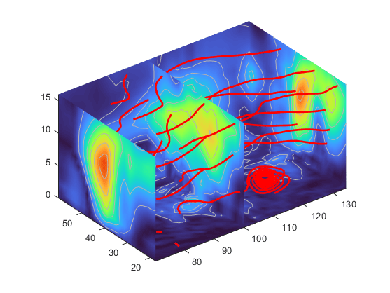

Display Streamlines Using Vector Data
Wind Mapping Data
The MATLAB® vector data set called wind represents air currents
over North America. This example uses a combination of techniques:
Stream lines to trace the wind velocity
Slice planes to show cross-sectional views of the data
Contours on the slice planes to improve the visibility of slice-plane coloring
1. Determine the Range of the Coordinates
Load the data and determine minimum and maximum values to locate the slice planes
and contour plots (load, min, max).
load wind xmin = min(x(:)); xmax = max(x(:)); ymax = max(y(:)); zmin = min(z(:));
2. Add Slice Planes for Visual Context
Calculate the magnitude of the vector field (which represents wind speed) to
generate scalar data for the slice command. Create slice planes
along the x-axis at xmin,
100, and xmax, along the
y-axis at ymax, and along the
z-axis at zmin. Specify interpolated
face coloring so the slice coloring indicates wind speed, and do not draw edges
(sqrt, slice, FaceColor, EdgeColor).
wind_speed = sqrt(u.^2 + v.^2 + w.^2); hsurfaces = slice(x,y,z,wind_speed,[xmin,100,xmax],ymax,zmin); set(hsurfaces,'FaceColor','interp','EdgeColor','none') colormap turbo
3. Add Contour Lines to the Slice Planes
Draw light gray contour lines on the slice planes to help quantify the color
mapping (contourslice, EdgeColor,
LineWidth).
hcont = ... contourslice(x,y,z,wind_speed,[xmin,100,xmax],ymax,zmin); set(hcont,'EdgeColor',[0.7 0.7 0.7],'LineWidth',0.5)
4. Define the Starting Points for Stream Lines
In this example, all stream lines start at an x-axis value of
80 and span the range 20 to 50 in the y-direction and 0 to 15
in the z-direction. Save the handles of the stream lines and
set the line width and color (meshgrid, streamline, LineWidth,
Color).
[sx,sy,sz] = meshgrid(80,20:10:50,0:5:15); hlines = streamline(x,y,z,u,v,w,sx,sy,sz); set(hlines,'LineWidth',2,'Color','r')
5. Define the View
Set up the view, expanding the z-axis to make it easier to
read the graph (view, daspect, axis).
view(3) daspect([2,2,1]) axis tight

See coneplot for an example of the same
data plotted with cones.